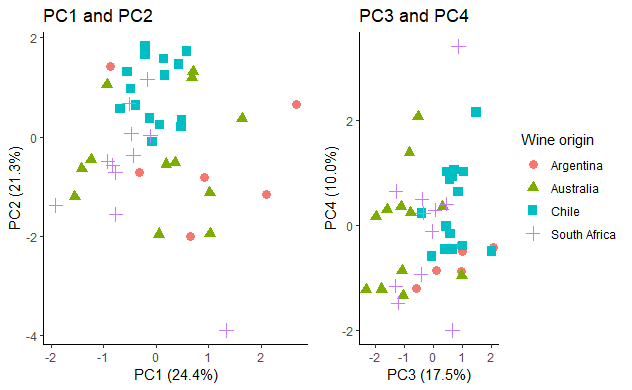
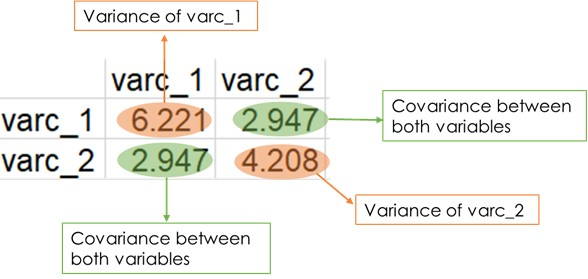
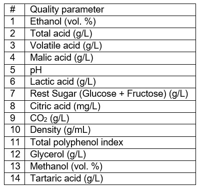
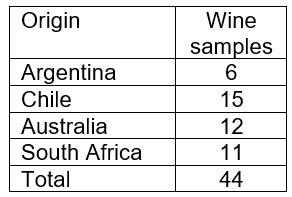

# Run the next line if you have not installed the packages:
# install.packages(c("ggplot2", "ggpubr", "readr", "purrr", "dplyr"))
library(ggplot2)
library(ggpubr)
library(readr)
library(purrr)
library(dplyr)
All the data and code of this post can be download on the next repository : pca-from-scratch
What is principal component analysis?
Principal component analysis (PCA) is an exploratory data analysis based on the reduction of dimensions of a given data set. The general idea is to reduce the data set so that it has fewer dimensions while retaining as much information as possible.
PCA allows us to make visual representations in two dimensions and to check for groupings or differences in the data related to different states, treatments, etc. In addition, we can get some clue as to which variables in the data are responsible for the visual differences.
It is important to emphasize that the PCA is not used exclusively for the above, and given that it is an exploratory analysis, the similarities or differences observed in the data should be considered with caution and in the context from which they originate.
A simple case with two-dimensional data
Let’s start with a simple example with two-dimensional data, which will allow us to visualize some of the basic concepts behind PCA and then generalize what we have learned to data with more than two dimensions.
Packages
For this post we will use some functions included in ggplot2, ggpubr, readr, purrr and dplyr:
Data simulation
First let’s simulate data with two dimensions. To do this let’s make the second variable directly dependent on the first one and store everything in a data frame:
set.seed(1) # For data reproducibility
# Variable 1
var_1 <- rnorm(50, 50, sd = 3)
# Variable 2
var_2 <- .5*var_1 + rnorm(50, sd = sqrt(3))
# Both variables in a data frame
data_set_1 <- tibble(var_1, var_2)
head(data_set_1)# A tibble: 6 × 2
var_1 var_2
<dbl> <dbl>
1 48.1 24.7
2 50.6 24.2
3 47.5 24.3
4 54.8 25.4
5 51.0 28.0
6 47.5 27.2If we make a scatter plot we can observe the clear dependence between both variables:
# A scatter plot with the two simulated variables
ggplot(data_set_1, aes(x = var_1, y = var_2)) +
geom_point(color = "blue", size = 2) +
xlab("Variable 1") +
ylab("Variable 2") +
theme_classic()
First step: Center each variable
The first step in the PCA is to center each variable with respect to its average value:
data_set_1 <- data_set_1 %>%
mutate(varc_1 = var_1 - mean(var_1), varc_2 = var_2 - mean(var_2))
head(data_set_1)# A tibble: 6 × 4
var_1 var_2 varc_1 varc_2
<dbl> <dbl> <dbl> <dbl>
1 48.1 24.7 -2.18 -0.604
2 50.6 24.2 0.250 -1.14
3 47.5 24.3 -2.81 -1.02
4 54.8 25.4 4.48 0.0829
5 51.0 28.0 0.687 2.62
6 47.5 27.2 -2.76 1.85 This did not change the relative position between each point, so the data look the same:
ggplot(data_set_1, aes(x = varc_1, y = varc_2)) +
geom_point(color = "blue", size = 2) +
geom_vline(xintercept = 0, linewidth = .5) +
geom_hline(yintercept = 0, linewidth = .5) +
theme_classic()
Second step: Obtaining the covariance matrix
The next step is to obtain the covariance matrix for the previous data set. For this we perform a matrix multiplication with the data as follows:
# Select only the centered variables
data_set_2 <- data_set_1 %>%
select(varc_1, varc_2) %>%
as.matrix()
# Calculate the covariance matrix
cov_m <- (t(data_set_2) %*% data_set_2) / (nrow(data_set_2) - 1)
cov_m varc_1 varc_2
varc_1 6.220943 2.946877
varc_2 2.946877 4.207523In the resulting matrix the diagonal contains the variance of each variable while the values outside the diagonal are the covariances between the variables (see figure below):

We can obtain the covariance matrix directly with the cov() function:
cov(data_set_2) varc_1 varc_2
varc_1 6.220943 2.946877
varc_2 2.946877 4.207523Or with the crossprod() function as follows:
crossprod(data_set_2) / (nrow(data_set_2) - 1) varc_1 varc_2
varc_1 6.220943 2.946877
varc_2 2.946877 4.207523Third step: Obtain the eigenvalues and eigenvectors of the covariance matrix
Principal components represent the directions in the data that explain the maximum amount of variance. They are “lines” that collect most of the information in the data. These directions can be obtained by calculating the eigenvalues and eigenvectors of the covariance matrix:
# Use eigen() to obtain eigenvectors and eigenvalues
cov_e <- eigen(cov_m)
# Eigenvectors
e_vec <- cov_e$vectors
# Eigenvalues
e_val <- cov_e$valuesThe span of each eigenvector can be considered the “line” that captures most of the variation:
# First eigenvector
ev_1 <- e_vec[,1]
# Slope of the first eigenvector
ev1_m <- ev_1[2] / ev_1[1]
# Second eigenvector
ev_2 <- e_vec[,2]
# Slope of the second eigenvector
ev2_m <- ev_2[2] / ev_2[1]
# Scatter plot showing the span of both eigenvectors
ggplot(data.frame(data_set_2), aes(x = varc_1, y = varc_2)) +
geom_point(color = "blue", size = 2) +
geom_vline(xintercept = 0, linewidth = .5) +
geom_hline(yintercept = 0, linewidth = .5) +
geom_abline(slope = ev1_m, color = "blue", linewidth = 0.7) +
geom_abline(slope = ev2_m, color = "red", linewidth = 0.7) +
theme_classic()
As can be seen, there is one eigenvector for each variable in the data set, in this case two. Also note that the eigenvectors are perpendicular:
# Multiply both eigenvectors
ev_1 %*% ev_2 [,1]
[1,] 0As for the eigenvalues, their numerical values are equal to the sum of squares of the distances of each projected data point in the corresponding principal component. This sum of squares is maximized in the first principal component.
Fourth step: Make a Scree Plot
Dividing each eigenvalue by n - 1 (n is the number of rows in the original data) will give an estimate of the variance represented by each principal component. The sum of all variances (the total variance) can be used to calculate the percentage of variation and visualized with a Scree Plot:
# Calculate the estimated variance for each eigenvalue
e_var <- e_val / (nrow(data_set_2) - 1)
# Data frame with variance percentages
var_per <- tibble(
PC = c("PC1", "PC2"),
PER = c(e_var) * 100 / sum(e_var) # Calculate the percentage
)
# Scree plot
ggplot(var_per, aes(x = PC, y = PER)) +
geom_col(width = 0.5, color = "black") +
xlab("Principal component") +
ylab("Percentage of variation (%)") +
theme_classic()
Fifth step: Obtain the loadings of each variable.
The eigenvectors obtained using the eigen() function are normalized. This means that their length is equal to 1:
# Norm of the first eigenvector
norm(as.matrix(ev_1), "F")[1] 1# Norm of the second eigenvector
norm(as.matrix(ev_2), "F")[1] 1The elements of each eigenvector are also called loadings and can be interpreted as the contribution of each variable in the data set to the corresponding principal component or, more strictly, as the coefficients of the linear combination of the original variables from which the principal components are constructed.
We can make a table with these values and see the contributions of each variable to each principal component:
# Data frame with both eigenvectors
loads <- tibble(
VAR = c("var_1", "var_2"),
PC1 = ev_1, # First eigenvecor
PC2 = ev_2 # Second eigenvectors
)
loads# A tibble: 2 × 3
VAR PC1 PC2
<chr> <dbl> <dbl>
1 var_1 -0.813 0.582
2 var_2 -0.582 -0.813The above can be useful in data with many dimensions to get an idea of which variables cause the groupings or differences in the PCA plot.
Sixth step: Representing data in fewer dimensions
If we change the base of the original data to that indicated by the eigenvectors, we are basically rotating the data:
# Change the basis of the original data
data_set_3 <- data_set_2 %*% solve(e_vec) # Inverse of eigenvectors matrix
# Scatter showing the rotation
ggplot(data.frame(data_set_3), aes(X1, X2)) +
geom_point(color = "blue", size = 2) +
geom_vline(xintercept = 0, linewidth = .5) +
geom_hline(yintercept = 0, linewidth = .5) +
xlab("PC1 (78.8%)") +
ylab("PC2 (21.2%)") +
theme_classic()
Comparing the two graphs gives us an idea of how the data have been rotated once we change the base:
# Scatter plot with the centered data
plot_data <- ggplot(data.frame(data_set_2), aes(x = varc_1, y = varc_2)) +
geom_point(color = "blue", size = 2) +
geom_vline(xintercept = 0, linewidth = .5) +
geom_hline(yintercept = 0, linewidth = .5) +
ylim(c(-8, 8.5)) +
ggtitle("Original Data") +
theme_classic()
# Scatter plot with the rotated data
plot_rotation <- ggplot(data.frame(data_set_3), aes(X1, X2)) +
geom_point(color = "blue", size = 2) +
geom_vline(xintercept = 0, linewidth = .5) +
geom_hline(yintercept = 0, linewidth = .5) +
xlab("PC1 (78.8%)") +
ylab("PC2 (21.2%)") +
ylim(c(-8, 8.5)) +
ggtitle("Change of Basis to Eigenvectors") +
theme_classic()
# Both graphs side by side
ggarrange(plot_data, plot_rotation)
Since principal component 1 (PC1) explains most of the variance in the data, we can omit principal component 2 (PC2) and represent each point in a single dimension, here as red dots:
# Data points just from PC 1
data_pc1 <- data.frame(v1 = data_set_3[,1], v2 = rep(0, nrow(data_set_3)))
# Scatter plot showing the projected points from PC1 (red points)
ggplot(data.frame(data_set_3), aes(X1, X2)) +
geom_point(color = "blue", size = 2) +
geom_point(data = data_pc1, aes(v1, v2), color = "red", size = 2) +
geom_vline(xintercept = 0, linewidth = .5) +
geom_hline(yintercept = 0, linewidth = .5) +
xlab("PC1 (78.8%)") +
ylab("PC2 (21.2%)") +
ylim(c(-8, 8.5)) +
theme_classic()
The above ideas can be used in data with many variables to reduce the dimensions and make two-dimensional representations of the data.
Generalization to data with more than two dimensions
Let us now apply the same procedure to a data set with more variables, namely wine samples analyzed by GC-MS and FT-IR instruments, where the following responses were measured:

The wine samples come from Argentina, Chile, Australia and South Africa:

The first six rows of the data set look as follows:
# Variable names
var_names <- read_csv("https://raw.githubusercontent.com/juanpa-biotech/pca-from-scratch/master/data/Label_Pred_values_IR.csv")
var_names <- names(var_names)
# Wine labels
wine_label <- read_csv("https://raw.githubusercontent.com/juanpa-biotech/pca-from-scratch/master/data/Label_Wine_samples.csv")
wine_label <- unname(unlist(wine_label))
# Wine data set
data_set_wine <- read_csv(
"https://raw.githubusercontent.com/juanpa-biotech/pca-from-scratch/master/data/Pred_values.csv",
col_names = var_names
)
row.names(data_set_wine) <- wine_label
head(as.matrix(data_set_wine)) Ethanol TotalAcid VolatileA MalicAcid pH LacticAc ReSugar CitricAcid
ARG-BNS1 13.62 3.54 0.29 0.89 3.71 0.78 1.46 0.31
ARG-DDA1 14.06 3.74 0.59 0.24 3.73 1.25 2.42 0.18
ARG-FFL1 13.74 3.27 0.47 -0.07 3.87 1.13 1.52 0.39
ARG-FLM1 13.95 3.66 0.47 0.09 3.79 1.00 4.17 0.41
ARG-ICR1 14.47 3.66 0.38 0.61 3.70 0.81 1.25 0.14
ARG-SAL1 14.61 3.45 0.52 0.16 3.92 1.76 1.40 0.10
CO2 Density FolinC Glycerol Methanol TartaricA
ARG-BNS1 85.61 0.99 60.92 9.72 0.16 1.74
ARG-DDA1 175.20 1.00 70.64 10.05 0.20 1.58
ARG-FFL1 513.74 0.99 63.59 10.92 0.18 1.24
ARG-FLM1 379.40 1.00 73.30 9.69 0.23 2.26
ARG-ICR1 154.88 0.99 71.69 10.81 0.20 1.22
ARG-SAL1 156.30 0.99 71.79 10.19 0.19 0.90Note that the wine samples are marked as the names of the rows in the data frame and in turn wine samples have associated values for each response (in the columns). Pay attention to this when calculating covariance matrices or using functions to perform PCA, do you want to reduce the dimensions with respect to rows or with respect to columns? Here we are interested in reducing the number of dimensions with respect to the responses (columns) and try to detect if there are any similarities or differences between the wine samples.
First step: Center the data
Subtract the average of each variable (columns) and divide by its standard deviation:
# Means for each variable
var_means <- unlist(map(data_set_wine, mean))
# Standard deviation for each variable
var_sd <- unlist(map(data_set_wine, sd))
# Center each variable
data_set_wine_2 <- map2(
data_set_wine, var_means, .f = function(x, mean) x - mean
)
# Devide by the standard deviation of each variable
data_set_wine_2 <- map2(
data_set_wine_2, var_sd, .f = function(x, sd) x / sd
)
# Make a matrix from the previous list
data_set_wine_2 <- as.matrix(data.frame(data_set_wine_2))Each row of the transformed data corresponds to the same wine sample as the original data.
The first six rows of the transformed data look like this:
head(data_set_wine_2) Ethanol TotalAcid VolatileA MalicAcid pH LacticAc
[1,] -0.63678489 -0.40870999 -0.7811641 2.2627949 0.18823560 -0.88226788
[2,] 0.29224039 0.01096889 1.3231961 -0.5694123 0.40060357 0.38388752
[3,] -0.38341492 -0.97527630 0.4814521 -1.9201573 1.88717938 0.06061381
[4,] 0.05998306 -0.15690246 0.4814521 -1.2229986 1.03770749 -0.28959935
[5,] 1.15792167 -0.15690246 -0.1498560 1.0427673 0.08205162 -0.80144937
[6,] 1.45351898 -0.59756526 0.8321787 -0.9179917 2.41810183 1.75780072
ReSugar CitricAcid CO2 Density FolinC Glycerol
[1,] -0.5311188 1.1594919 -1.6049333 -0.7844233 -0.1371321 -0.525885112
[2,] 0.1996454 0.1084153 -0.9482843 1.2458487 1.2376582 -0.160707985
[3,] -0.4854461 1.8063082 1.5330409 -0.7844233 0.2405111 0.802031815
[4,] 1.5317676 1.9680124 0.5483973 1.2458487 1.6138874 -0.559083800
[5,] -0.6909735 -0.2149929 -1.0972195 -0.7844233 1.3861700 0.680306454
[6,] -0.5767916 -0.5384012 -1.0868116 -0.7844233 1.4003137 -0.005784995
Methanol TartaricA
[1,] -1.1081037 0.43877622
[2,] -0.0870238 -0.03865555
[3,] -0.5975636 -1.05319836
[4,] 0.6787860 1.99042973
[5,] -0.0870238 -1.11287729
[6,] -0.3422939 -2.06774119Dividing by standard deviations is a way of giving each variable equal importance despite its range, magnitude and/or scale of measurement. In addition to dividing by the standard deviation, it is possible to apply other transformations depending on the data. See the resources at the end of this post if you are interested.
Second step: Calculating the covariance matrix
We multiply the data (in matrix form) by its transpose:
# Calculate the covariance matrix
cov_wine <- (t(data_set_wine_2) %*% data_set_wine_2) /
(nrow(data_set_wine_2) - 1)
cov_wine[1:5, 1:5] Ethanol TotalAcid VolatileA MalicAcid pH
Ethanol 1.00000000 0.3262321 0.2028382 0.04166778 0.1697347
TotalAcid 0.32623209 1.0000000 0.4660575 -0.26067574 -0.3518303
VolatileA 0.20283816 0.4660575 1.0000000 -0.74628880 0.3011611
MalicAcid 0.04166778 -0.2606757 -0.7462888 1.00000000 -0.2929542
pH 0.16973470 -0.3518303 0.3011611 -0.29295421 1.0000000Here we only show the first five rows and columns of the covariance matrix. If you want to display the whole matrix a good way is to use the View() function.
Each value of the cov_wine matrix has the same interpretation as in the example with two variables, the values on the diagonal are the variances of each variable, and the values outside the diagonal are the covariances between variables. As can be seen, all variances are equal to 1. This is precisely the effect of centering and dividing by the standard deviation.
Third step: Obtain the eigenvalues and eigenvectors of the covariance matrix.
Let’s use the eigen() function to obtain the eigenvectors and their eigenvalues:
# eigen() to obtain eigenvalues and eigenvectors
eg_wine <- eigen(cov_wine)
# Eigenvalues
eg_vals <- eg_wine$values
# Eigenvectors
eg_vecs <- eg_wine$vectorsThe number of vectors and eigenvalues is the same as the number of variables in the original data set:
# Number of eigenvalues
length(eg_vals)[1] 14# Number of eigenvectors
ncol(eg_vecs)[1] 14Fourth step: Make a Scree Plot
We calculated the percentage of variation of each component and made a Scree plot:
# Calculate variances from each eigenvalue
eg_vars <- eg_vals / (nrow(data_set_wine_2) - 1)
# Data frame with variance percenatges
vars_perc <- tibble(
PC = unlist(map(1:14, function(x) paste0("PC", x))),
PER = round((eg_vars * 100) / sum(eg_vars), 4)
)
# Scree plot
ggplot(
vars_perc,
aes(x = reorder(PC, order(PER, decreasing = TRUE)), y = PER)
) +
geom_col(width = 0.5, color = "black") +
xlab("Principal component") +
ylab("Percentage of variation (%)") +
theme_classic()
Fifth step: Obtain the loadings of each variable
The elements of each eigenvector represent the weight of each variable in the corresponding principal component:
# Data frame with loading scores
loads_wine <- data.frame(eg_vecs)
colnames(loads_wine) <- vars_perc$PC
rownames(loads_wine) <- var_names
head(loads_wine) PC1 PC2 PC3 PC4 PC5
Ethanol -0.2050720 -0.3452884 0.28833198 -0.33833697 0.001102612
TotalAcid -0.1457210 -0.4545803 -0.06374908 0.42139270 0.041508881
VolatileA 0.2959952 -0.4418538 0.03338975 0.08430388 -0.010891943
MalicAcid -0.3401714 0.3173079 0.17907611 -0.04002812 -0.252870227
pH 0.2413635 -0.1030772 -0.04459655 -0.66472873 -0.170592677
LacticAc 0.3462627 -0.3745378 -0.16738658 0.11850141 -0.108643313
PC6 PC7 PC8 PC9 PC10
Ethanol -0.02992588 0.106645514 0.40565762 0.2220668 -0.07364281
TotalAcid -0.10721872 0.109080109 -0.15801515 0.1647662 -0.12640759
VolatileA 0.12676353 -0.117134957 -0.01066998 -0.2323371 0.19698524
MalicAcid 0.09495473 0.247290148 -0.35870967 0.1792700 -0.27203174
pH 0.01717167 -0.191605073 -0.30040129 0.3352703 0.28827462
LacticAc 0.05496474 0.008009813 -0.10169448 0.1377493 -0.28605639
PC11 PC12 PC13 PC14
Ethanol 0.52247393 -0.22486081 0.29025392 -0.04195694
TotalAcid -0.09209975 -0.25488777 -0.01537897 0.65083548
VolatileA 0.19114512 -0.33800898 -0.59864002 -0.27743084
MalicAcid -0.07338526 -0.53559762 -0.18854505 -0.23066288
pH -0.21200577 -0.09998927 -0.02838824 0.28223548
LacticAc -0.32247769 -0.11583440 0.49548494 -0.45696212Making a scatter plot with these values can help determine correlations between variables and/or explain why a particular clustering is observed in principal component scatter plots (next section):
# Scatter plot with loadings of PC1 and PC2
ld_pc12 <- ggplot(loads_wine, aes(PC1, PC2)) +
geom_point(color = "blue", size = 2) +
geom_vline(xintercept = 0) +
geom_hline(yintercept = 0) +
geom_text(aes(label = rownames(loads_wine)), hjust = -.2) +
ggtitle("Loadings for PC1 and PC2") +
xlim(c(-.7, .7)) +
ylim(c(-.7, .7)) +
xlab("PC1 (24.4%)") +
ylab("PC2 (21.3%)") +
theme_classic()
# Scatter plot with loadings of PC3 and PC4
ld_pc34 <- ggplot(loads_wine, aes(PC3, PC4)) +
geom_point(color = "blue", size = 2) +
geom_vline(xintercept = 0) +
geom_hline(yintercept = 0) +
geom_text(aes(label = rownames(loads_wine)), hjust = -.2) +
ggtitle("Loadings for PC3 and PC4") +
xlim(c(-.7, .7)) +
ylim(c(-.7, .7)) +
xlab("PC3 (17.5%)") +
ylab("PC4 (10.0%)") +
theme_classic()
# Both graphs side by side
ggarrange(ld_pc12, ld_pc34) 
Sixth step: Representing data in fewer dimensions
Ideally, if PC1 and PC2 picked up most of the variation, say more than 90%, it would be possible to make a good representation of the data in a two-dimensional scatter plot. But since real data are almost never ideal, in this case PC1, PC2, PC3 and PC4 account for 73% of the variation. Let us try to observe clustering using two scatter plots, the first with PC1 and PC2, and the second with PC3 and PC4.
First, we change the basis of the transformed data to that indicated by the eigenvectors:
# Change the basis of the data
data_set_wine_eb <- data_set_wine_2 %*% solve(eg_vecs)
# Transfrom to a data frame
data_set_wine_eb <- data.frame(data_set_wine_eb)
colnames(data_set_wine_eb) <- vars_perc$PC
# Add a column with the origin of each wine sample
data_set_wine_eb <- data_set_wine_eb %>%
mutate(
WineSample = unlist(map(wine_label, function(x) substr(x, 1, 3)))
) %>%
relocate(WineSample)
head(data_set_wine_eb) WineSample PC1 PC2 PC3 PC4 PC5
1 ARG -0.8708602 1.4271679 1.0042682 -0.4970542 -2.40194963
2 ARG 0.9214933 -0.8023313 0.9170387 -0.3788901 0.04278493
3 ARG 2.0993602 -1.1582579 0.1104490 -0.8588001 0.36878072
4 ARG 2.6784566 0.6585042 -0.5914731 -1.1987690 0.55471303
5 ARG -0.3093155 -0.7061611 0.9719731 -0.8791527 -1.48911945
6 ARG 0.6656888 -1.9938918 2.0606329 -0.4319683 -0.58522246
PC6 PC7 PC8 PC9 PC10 PC11
1 -0.50073335 0.7380182 -0.7113971 1.28454429 0.141197785 0.91258285
2 -1.11669152 -0.6204253 0.1024002 -0.66345802 0.217715309 -0.44779807
3 -0.01460188 0.6155704 1.2988198 -0.31647718 -1.945505546 1.56333545
4 -1.77225038 1.1845744 0.7517347 -0.01741376 -0.458803511 -1.38374975
5 0.58458758 -1.3525017 0.3597807 1.06873458 0.656603378 -0.04068736
6 0.76213010 -0.9997045 2.4380628 -1.36498248 -0.004949351 1.27477965
PC12 PC13 PC14
1 -0.0961029 -0.01151848 0.12807023
2 0.6191680 -1.13863351 -0.22032005
3 -0.2843139 1.44732864 0.08942808
4 0.1136096 -1.16558478 -0.14095094
5 -0.4097057 0.16732603 -0.70481769
6 -0.5940964 -0.93709414 -0.52629641Now, let’s make both scatter plots taking only the values of PC1, PC2, PC3 and PC4:
# Scatter plot for PC1 and PC2
pc12 <- ggplot(
data_set_wine_eb,
aes(PC1, PC2, color = WineSample, shape = WineSample)
) +
geom_point(size = 3) +
ggtitle("PC1 and PC2") +
xlab("PC1 (24.4%)") +
ylab("PC2 (21.3%)") +
theme_classic() +
theme(legend.position = "none")
# Scatter plot for PC3 and PC4
pc34 <- ggplot(
data_set_wine_eb,
aes(PC3, PC4, color = WineSample, shape = WineSample)
) +
geom_point(size = 3) +
scale_color_discrete(
name = "Wine origin",
labels = c("Argentina", "Australia", "Chile", "South Africa")
) +
scale_shape_discrete(
name = "Wine origin",
labels = c("Argentina", "Australia", "Chile", "South Africa")
) +
ggtitle("PC3 and PC4") +
xlab("PC3 (17.5%)") +
ylab("PC4 (10.0%)") +
theme_classic()
# Both graphs side by side
ggarrange(pc12, pc34)
Key points
Principal component analysis (PCA) is a methodology that allows us to reduce the dimensionality of data while preserving important information.
PCA is used to visualize data with many dimensions in two-dimensional plots, identify groupings and differences, and determine which variables are most relevant. However, its interpretation should be done with caution due to its exploratory nature.
PCA can be performed in several steps with basic functions and linear algebra operations using the following steps:
- Center each variable.
- Calculate the covariance matrix.
- Obtain eigenvalues and eigenvectors representing directions of maximum variation.
- Make a Scree Plot to visualize the variance explained by each component.
- Obtain the loadigns of the variables in the principal components.
- Represent the data in reduced dimensions, generally in two dimensions.
Additional Resources
It is important to know linear algebra to understand and visualize the core of PCA. The 3Blue1Brown video series is an excellent starting point for learning linear algebra:
Intuitive explanations of the PCA can be found in other channels:
Principal Component Analysis (PCA).
StatQuest: Principal Component Analysis (PCA), Step-by-Step.
If you would like to see some examples of the application of this analysis to experimental data here are two articles oriented to chemometrics and metabolomics:
The code on this post is licensed under the Creative Commons Attribution 4.0 International License